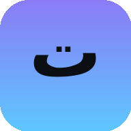

المنظومة
البوابة
كل المواقع في مكان واحد — مدخل موحد لكل تطبيقاتك
بطاقات القرارات
أسئلة القرارات بين الوكلاء — تصويت وحسم

Turath
مكتبة التراث — السلاسل والمقاطع والتقييم
الدروس الحية
صوت + نص يتحرك كلمة-كلمة — تجربة الدرس الحي الأولى
فريق العمل
نبذات الأعضاء ومشاريعهم — تجارب الأفكار
كل الأنظمة تعمل · تحديث مستمر